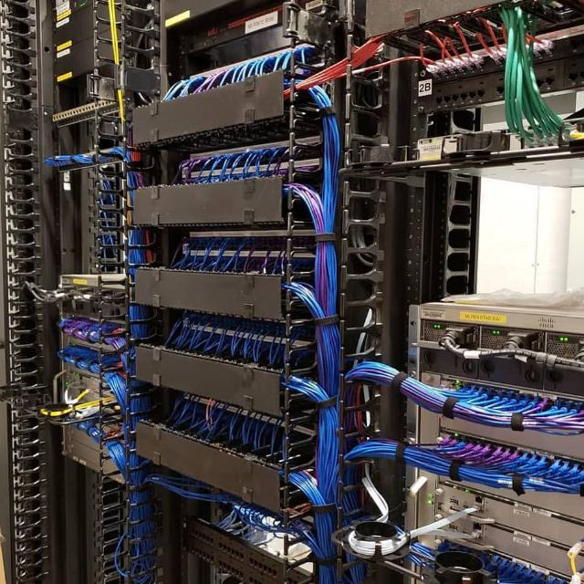
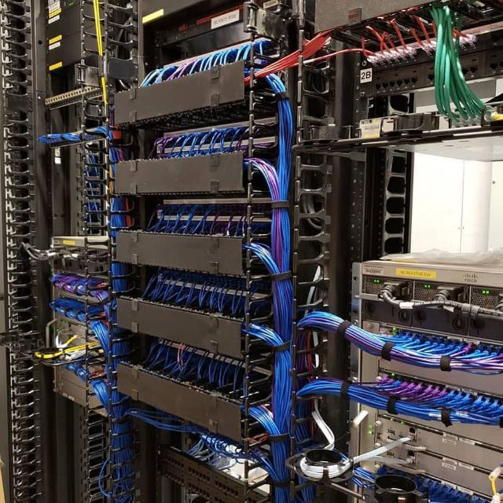

Star Life Technologies render services in:
- CCTV installation
- Network installation and configuration
- Operating system installation
- Helpdesk
Location: Dublin, Ireland
Very affordable and reliable.
Contact: +353-875555577
Email: StarLifeTechnologies@yahoo.com
Twitter: @StarLifeTechnologies


 
